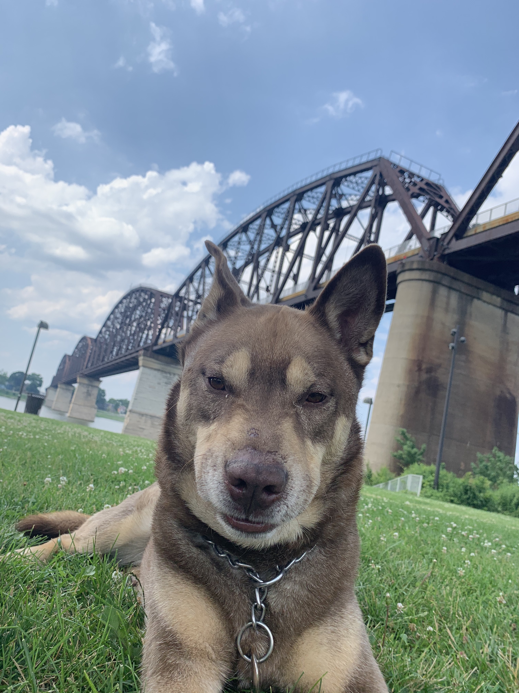
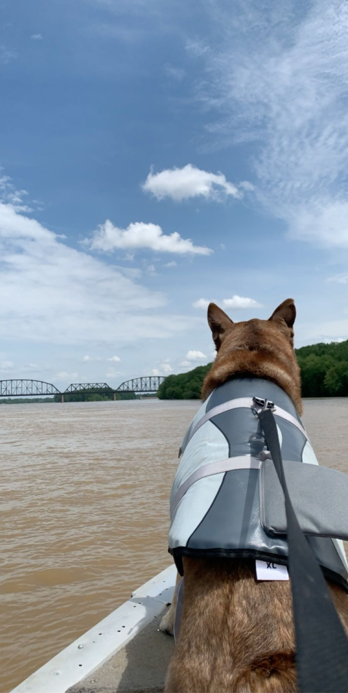

Social Media Post 1
Louisville, Kentucky. May, 2018
Waterfront Wednesday
On this day Ramz and I had been on a run earlier that day. By the time we made it to the Waterfront he wanted less to do with walking around, and more to do with just enjoying my company and relaxing.
SOCIAL MEDIA POST 2
Louisville, Kentucky. July, 2017
I'm on a boat!
On this beautiful Summer day Ramz and I hopped on board onto our friend Zach's boat. Ramz was finally able to rock his brand new water vest. Ramz was happy to be on the edge like this because it reminded him of Rose in The Titanic.